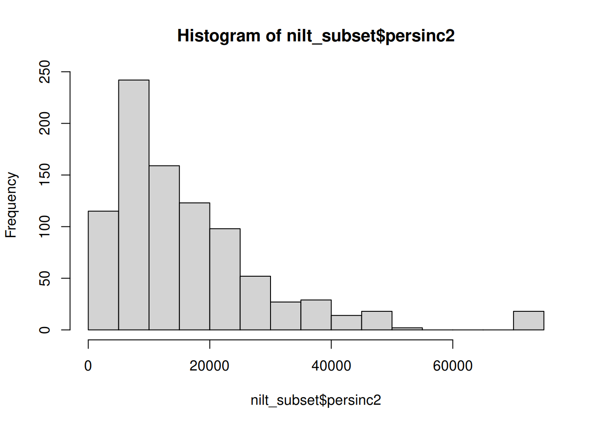
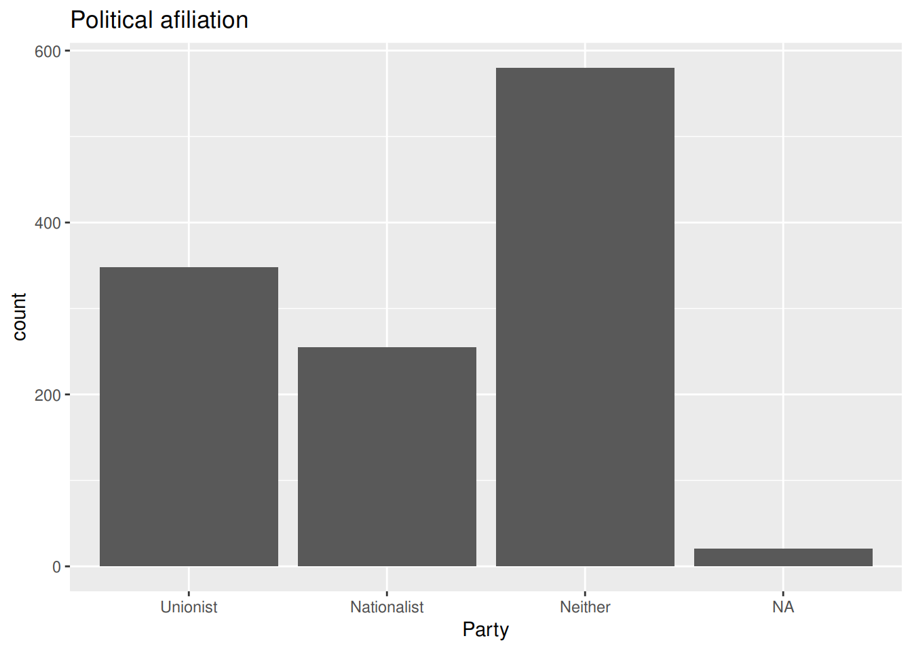
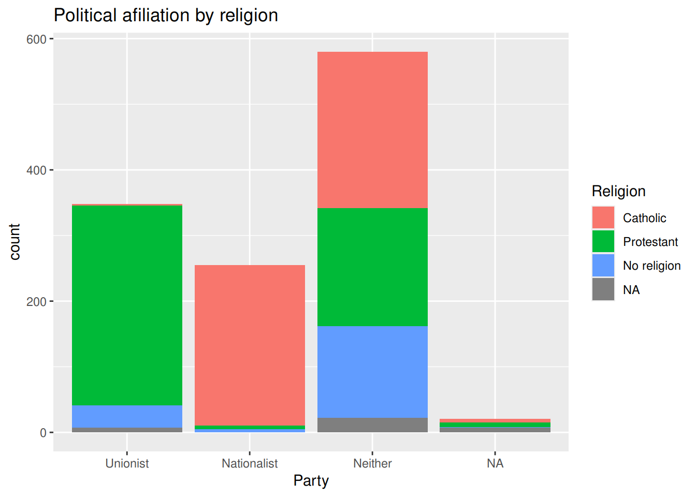
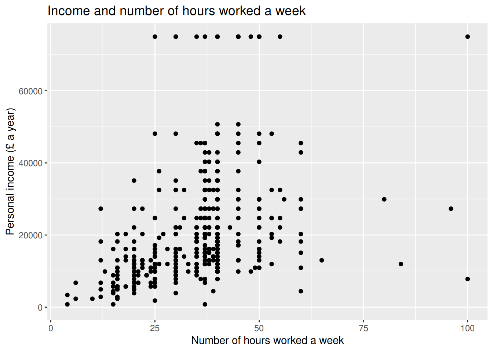
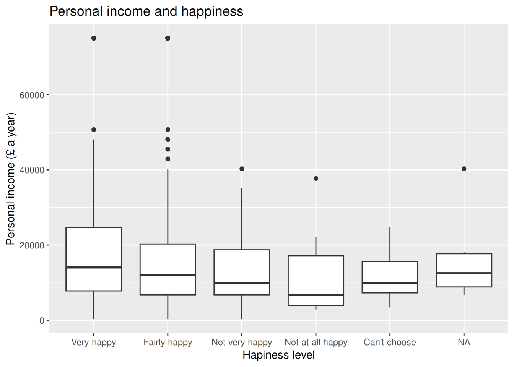
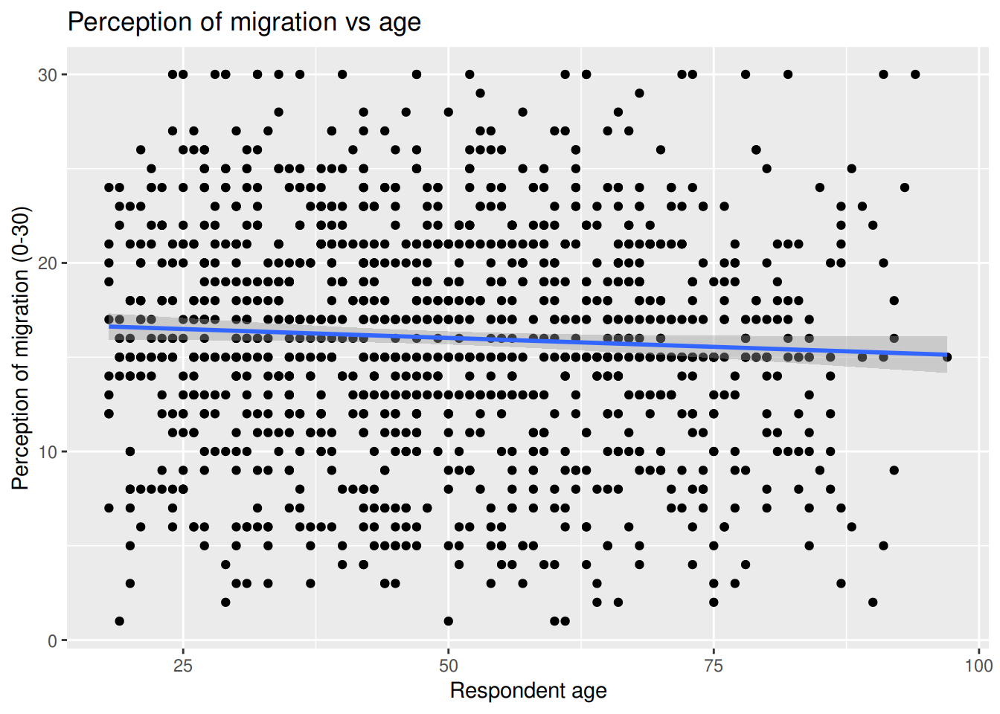
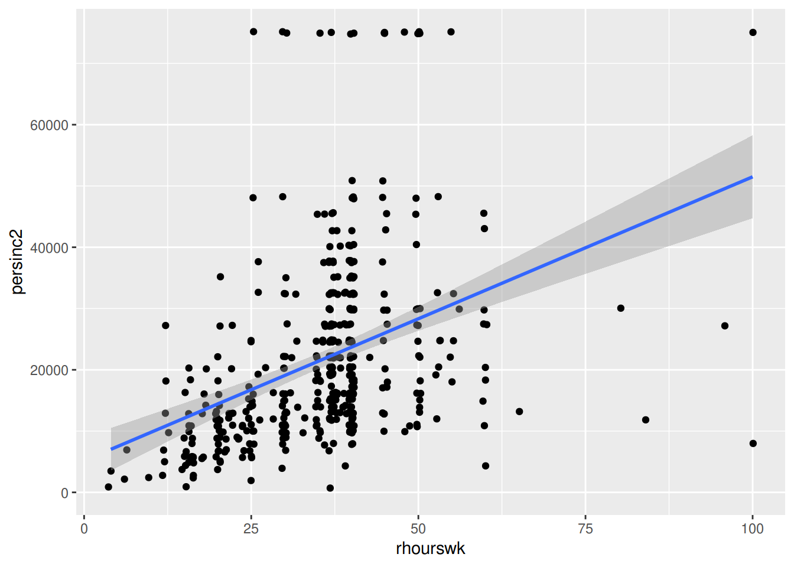
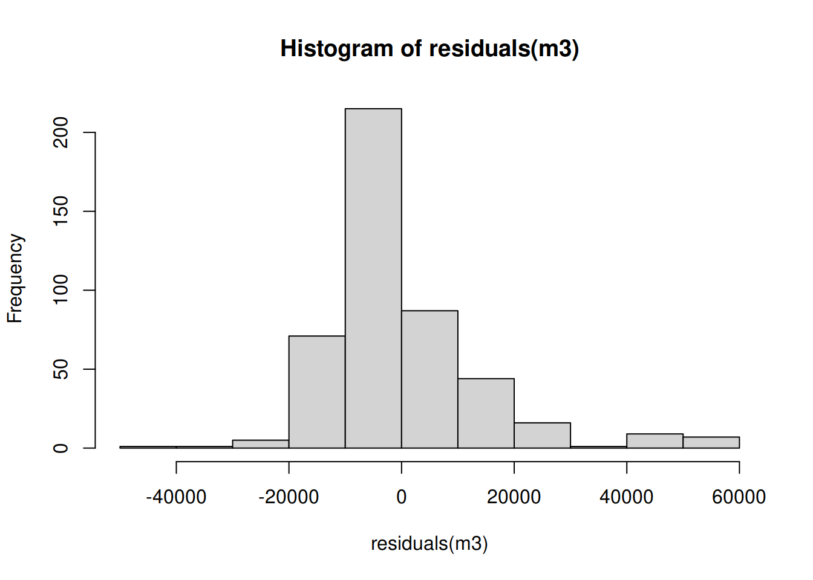
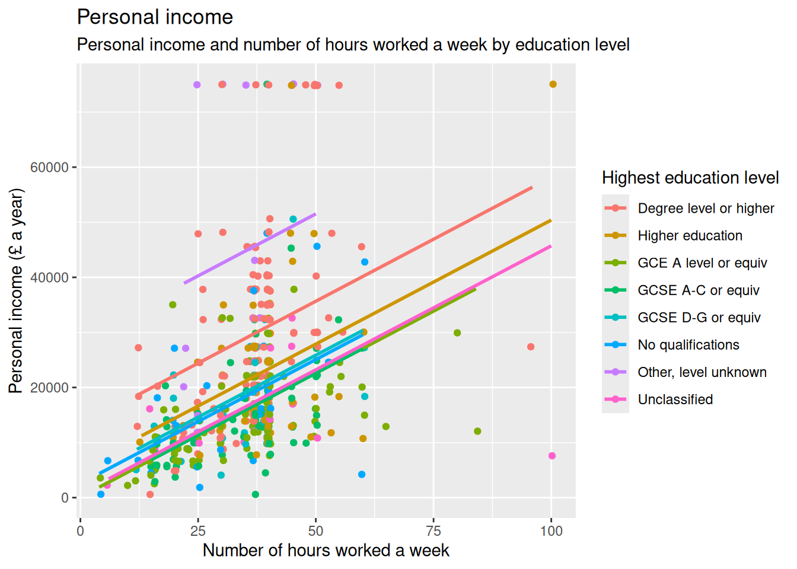

Workbook suggested answers
10.7 Introduction
This chapter presents the suggested R code to answer the workbook activities and exercises throughout the course labs in Quantitative Research Methods for Social Sciences. This covers from Lab 3 to Lab 9.
Before looking at the answers, try asking your tutor for help. Also, we strongly recommend web resources, such as https://stackoverflow.com/ or https://community.rstudio.com/. By solving the issues, you will learn a lot! ;)
10.9 Lab 4. Exploratory data analysis
Preamble code
## Load the packages
library(tidyverse)
# Read the data from the .rds file
nilt <- readRDS("data/nilt_r_object.rds")#Subset
nilt_subset <- select(nilt, rsex, rage, highqual, religcat, uninatid, ruhappy, rhourswk, persinc2)10.9.1 Activity #1
From your R Studio Cloud script, do the following activities using the data stored in the nilt_subset object:
- Create a One-Way contingency table for
uninatidin thenilt_subsetdataset using thesumtable()function;
# Load the vtable package to create summary tables
library(vtable)
# Create table
sumtable(nilt_subset, vars = c('uninatid'))| Variable | N | Percent |
|---|---|---|
| uninatid | 1183 | |
| … Unionist | 348 | 29% |
| … Nationalist | 255 | 22% |
| … Neither | 580 | 49% |
- Using the variables
religcatanduninatid, generate a Two-Way contingency table;
| Variable | N | Percent | N | Percent | N | Percent |
|---|---|---|---|---|---|---|
| religcat | 341 | 255 | 558 | |||
| … Catholic | 2 | 1% | 245 | 96% | 238 | 43% |
| … Protestant | 305 | 89% | 5 | 2% | 180 | 32% |
| … No religion | 34 | 10% | 5 | 2% | 140 | 25% |
10.9.2 Activity #2
Using the data in the nilt_subset object, complete the following activities.
- Using the
hist()function plot a histogram of personal incomepersinc2. From the NILT documentation this variable refers to annual personal income in £ before taxes and other deductions;

* Create a summary of the personal income persinc2 variable, using the sumtable() function.
| Variable | N | Mean | Std. Dev. | Min | Pctl. 25 | Pctl. 75 | Max |
|---|---|---|---|---|---|---|---|
| persinc2 | 897 | 16395 | 13466 | 260 | 6760 | 22100 | 75000 |
- Compute the mean and standard deviation of the personal income
persinc2, grouped by happinessruhappy.
| Variable | N | Mean | SD | N | Mean | SD | N | Mean | SD | N | Mean | SD | N | Mean | SD |
|---|---|---|---|---|---|---|---|---|---|---|---|---|---|---|---|
| persinc2 | 305 | 17569 | 13429 | 500 | 16262 | 14015 | 62 | 13445 | 9754 | 9 | 12451 | 11501 | 15 | 11457 | 6113 |
10.10 Lab 6. Visual exploratory analysis
Preamble code
## Load the packages
library(tidyverse)
# Load the data from the .rds file we created in the last lab
nilt <- readRDS("data/nilt_r_object.rds")
#Create subset
nilt_subset <- select(nilt, rsex, rage, highqual, religcat, uninatid, ruhappy, rhourswk, persinc2)10.10.1 Excercices
Using the nilt_subset object, complete the tasks below in the Rmd file ‘Lab_4’, which you created earlier. Insert a new chunk for each of these activities and include brief comments as text in the Rmd document to introduce the plots and discuss the results (tip —leave an empty line between your text and the next chunk to separate the description and the plots):
- Create a first-level header to start a section called “Categorical analysis”;
- Create a simple bar plot using the
geom_bar()geometry to visualize the political affiliation reported by the respondents using the variableuninatid;
ggplot(nilt_subset, aes(x=uninatid)) +
geom_bar() +
labs(title = "Political afiliation", x= "Party")
* Based on the plot above, create a ‘stacked bar plot’ to visualize the political affiliation by religion, using the uninatid and religcat variables;
ggplot(nilt_subset, aes(x=uninatid, fill = religcat)) +
geom_bar() +
labs(title = "Political afiliation by religion",
x= "Party", fill = "Religion") * Create a new first-level header to start a section called “Numeric analysis”;
- Create a scatter plot about the relationship between personal income
persinc2on the Y axis and number of hours worked a weekrhourswkon the X axis;
ggplot(nilt_subset, aes(x= rhourswk, y=persinc2)) +
geom_point() +
labs(title= 'Income and number of hours worked a week',
x = 'Number of hours worked a week', y= 'Personal income (£ a year)' )
* Finally, create a box plot to visualize personal income persinc2 on the Y axis and self-reported level of happiness ruhappy on the x axis… Interesting result, Isn’t it? Talk to your lab group-mates and tutors about your results on Zoom (live) or your Lab Group on Teams (online anytime);
ggplot(nilt_subset, aes(x= ruhappy, y=persinc2)) +
geom_boxplot() +
labs(title= 'Personal income and happiness',
x='Hapiness level', y='Personal income (£ a year)')
- Briefly comment each of the plots as text in your Rmd file;
- Knit the .Rmd document as HTML or PDF. The knitted file will be saved automatically in your project. You can come back to the Rmd file to make changes if needed and knit it again as many times as you wish.
10.11 Lab 7. Correlation
## Load the packages
library(tidyverse)
# Load the data from the .rds file we created in lab 3
nilt <- readRDS("data/nilt_r_object.rds")# Age of respondent’s spouse/partner
nilt$spage <- as.numeric(nilt$spage)
# Migration
nilt <- mutate_at(nilt, vars(mil10yrs, miecono, micultur), as.numeric)# overall perception towards migrants
nilt <- rowwise(nilt) %>%
# sum values
mutate(mig_per = sum(mil10yrs, miecono, micultur, na.rm = T )) %>%
ungroup() %>%
# assign NA to values that sum 0
mutate(mig_per = na_if(mig_per, 0))10.11.1 Activity 1
Using the nilt data object, visualize the relationship of the following variables by creating a new chunk. Run the chunk individually and comment on what you observe from the result as text in the Rmd file (remember to leave an empty line between your text and the chunk).
- Create a scatter plot to visualize the correlation between the respondent’s overall opinion in relation to migration
mig_perand the respondent’s agerage. Remember that we just created themig_pervariable by summing three variables which were in a 0-10 scale (the higher the value, the better the person’s perception is). Inaes(), specifyrageon the X axis andmig_peron the Y axis. Use theggplot()function andgeom_point(). Also, include a straight line describing the points using thegeom_smooth()function. Within this function, set themethodargument to'lm'.
ggplot(nilt, aes(x=rage, mig_per)) +
geom_point() +
geom_smooth(method = 'lm') +
labs(title = 'Perception of migration vs age',
x= 'Respondent age', y= 'Perception of migration (0-30)') * What type of relationship do you observe? Comment the overall result of the plot and whether this is in line with your previous expectation.
10.12 Lab 8. Linear model. Simple linear regression
## Load the packages
library(tidyverse)
# Read the data from the .rds file
nilt <- readRDS("data/nilt_r_object.rds")10.12.1 Lab activities
Use the nilt data set object in your linear_model_intro file to:
- Plot a scatter plot using
ggplot. In the aesthetics, locaterhourswkin the X axis, andpersinc2in the Y axis. In thegeom_point(), jitter the points by specifying theposition = 'jitter'. Also, include the best fit line using thegeom_smooth()function, and specify themethod = 'lm'inside.
ggplot(nilt, aes(x= rhourswk, y= persinc2)) +
geom_point(position = 'jitter') +
geom_smooth(method = 'lm')
2. Print the summary of m3 using the summary() function.
##
## Call:
## lm(formula = persinc2 ~ rhourswk, data = nilt)
##
## Residuals:
## Min 1Q Median 3Q Max
## -43694 -8148 -3070 4990 58249
##
## Coefficients:
## Estimate Std. Error t value Pr(>|t|)
## (Intercept) 5170.4 1966.2 2.63 0.00884 **
## rhourswk 463.2 52.4 8.84 < 2e-16 ***
## ---
## Signif. codes: 0 '***' 0.001 '**' 0.01 '*' 0.05 '.' 0.1 ' ' 1
##
## Residual standard error: 13860 on 455 degrees of freedom
## (747 observations deleted due to missingness)
## Multiple R-squared: 0.1466, Adjusted R-squared: 0.1447
## F-statistic: 78.15 on 1 and 455 DF, p-value: < 2.2e-16- Is the the relationship of hours worked a week significant? Re: Yes. The p-value (fourth column of the ‘Coefficients’ table) is lower than 0.05.
- What is the adjusted r-squared? How would you interpret it? Re: the adjusted R-squared is 0.14. This can be interpreted in terms of percentage, e.g. 14% of the variance in personal income can be explained by the number of hours worked a week.
- What is the sample size to fit the model? Re: The total number of observations in the data set is 1,204 and the model summary says that 747 observations were deleted due to missingness. Therefore, the sample size is 457 (1204-747).
- What is the expected income in pounds a year for a respondent who works 30 hours a week according to coefficients of this model?
## [1] 19066.4- Plot a histogram of the residuals of
m3using theresiduals()function insidehist(). Do the residuals look normally distributed (as in a bell-shaped curve)?
 Overall, the residuals look normally distributed with the exception of the values to the right-hand side of the plot (between 40000 and 60000).
10.13 Lab 9. Multivariate linear model
10.13.1 Lab activities
- Load the packages, and the data that you will need in your file using the code below:
## Load the packages
library(moderndive)
library(tidyverse)
# Read the data from the .rds file
nilt <- readRDS("data/nilt_r_object.rds")- Print a table for the highest level of qualification
highqualusing thetable()function.
##
## Degree level or higher Higher education GCE A level or equiv
## 230 102 243
## GCSE A-C or equiv GCSE D-G or equiv No qualifications
## 185 82 281
## Other, level unknown Unclassified
## 27 54- Generate a scatter plot using
ggplot. Withinaes(), locate the number of hours worked a weekrhourswkon the X axis and the personal incomepersinc2on the Y axis, and specify thecolorof the dots by the highest level of qualificationhighqual. Use thegeom_point()function and ‘jitter’ the points using the argumentposition. Add the parallel slopes using thegeom_parallel_slopes()function and set the standard errorsetoFALSE. What is your interpretation of the plot? Write down your comments to introduce the plot.
ggplot(nilt, aes(x = rhourswk, y= persinc2, color = highqual)) +
geom_point(position = 'jitter') +
moderndive::geom_parallel_slopes(se = FALSE) +
labs(title = "Personal income",
subtitle = 'Personal income and number of hours worked a week by education level',
x= 'Number of hours worked a week', y= 'Personal income (£ a year)',
color = 'Highest education level')
- Fit a linear model model using the
lm()function to analyse the personal incomepersinc2using the number of works worked a weekrhourswk, the highest level of qualificationhighqual, and the age of the respondentrageas independent variables. Store the model in an object calledm4and print the summary.
##
## Call:
## lm(formula = persinc2 ~ rhourswk + rage + highqual, data = nilt)
##
## Residuals:
## Min 1Q Median 3Q Max
## -36228 -6425 -1411 4635 54749
##
## Coefficients:
## Estimate Std. Error t value Pr(>|t|)
## (Intercept) 3904.64 2714.25 1.439 0.151
## rhourswk 444.79 45.32 9.814 < 2e-16 ***
## rage 236.59 48.47 4.881 1.47e-06 ***
## highqualHigher education -8164.91 1939.50 -4.210 3.09e-05 ***
## highqualGCE A level or equiv -12439.26 1563.42 -7.956 1.47e-14 ***
## highqualGCSE A-C or equiv -13037.47 1703.07 -7.655 1.20e-13 ***
## highqualGCSE D-G or equiv -11622.07 2665.38 -4.360 1.61e-05 ***
## highqualNo qualifications -12968.10 2339.78 -5.542 5.11e-08 ***
## highqualOther, level unknown 15445.70 3334.75 4.632 4.76e-06 ***
## highqualUnclassified -12399.58 2786.16 -4.450 1.08e-05 ***
## ---
## Signif. codes: 0 '***' 0.001 '**' 0.01 '*' 0.05 '.' 0.1 ' ' 1
##
## Residual standard error: 11830 on 447 degrees of freedom
## (747 observations deleted due to missingness)
## Multiple R-squared: 0.3887, Adjusted R-squared: 0.3764
## F-statistic: 31.58 on 9 and 447 DF, p-value: < 2.2e-16- Comment on the results of the model by mentioning which of the variables is significant and their respective p-value, the adjusted r-squared of the model, and the number of observations used to fit the model. Re: All the independent variables including the number of hours worked a week, age, and all the categories of highest qualification level compared to ‘Degree or higher’ are significant to predict personal income in the model ‘m4’, considering that the p-value is lower than 0.05. We can confirm this from the fourth column of the ‘Coefficients’ table. The adjusted R-squared of the model is 0.37. This means that 37.6% of the variance in personal income can be explained by these variables. The size of the sample used to fit this model is 457, considering that the ‘nilt’ data set contains 1204 observations but 747 were deleted due to missingness (1204 - 747).
- Plot a histogram of the residuals for model
m4. Do they look normally distributed? Can we trust our estimates or would you advise to carry out further actions to verify the adequate interpretation of this model?
 The distribution of the residuals in ‘m4’ look overall normally distributed. However, the distribution is not perfectly symmetric. Therefore, we would advice to conduct further checks to test the linear model assumptions.
The distribution of the residuals in ‘m4’ look overall normally distributed. However, the distribution is not perfectly symmetric. Therefore, we would advice to conduct further checks to test the linear model assumptions.